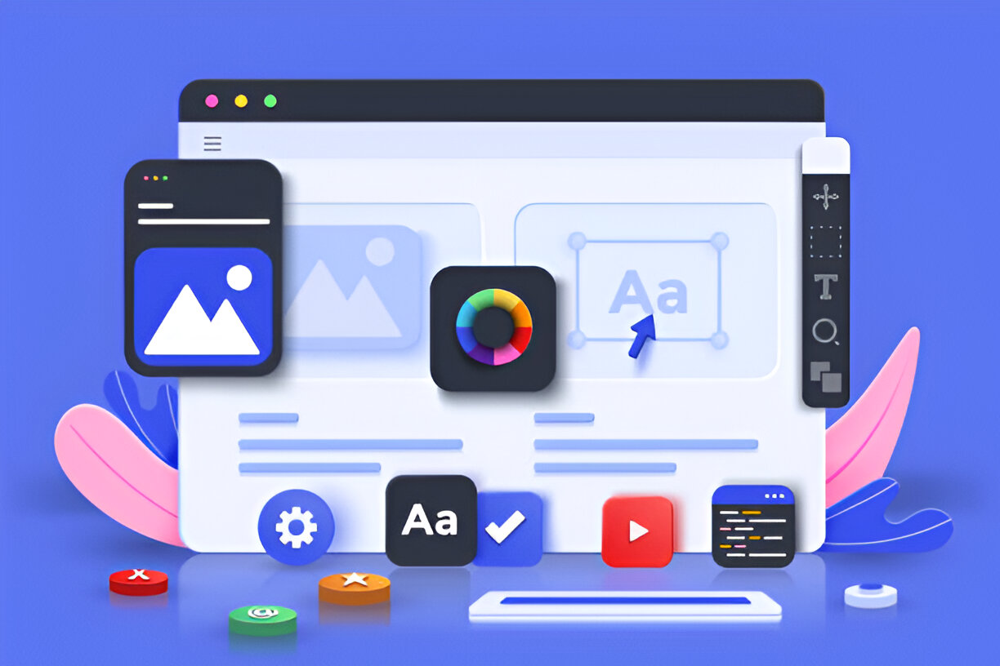

Our Core Services
At Cyned Technologies, we provide a range of core services to elevate your digital presence, including software development, UI/UX design, SEO, and web content management solutions.
Software Development
At Cyned Technologies, we specialize in delivering high-quality software development services tailored to your business needs. Whether it’s custom web and mobile applications, cloud computing, or data analytics, we provide end-to-end support with an agile approach. Our solutions are scalable, secure, and built to drive innovation and growth. Partner with us for reliable, cutting-edge technology that empowers your business.
UI/UX Design
Cyned Technologies specialises in creating user-centered UI/UX designs that are both visually compelling and highly functional. We design intuitive interfaces that align with your brand’s identity and enhance user engagement. By focusing on seamless navigation and appealing aesthetics, we deliver digital experiences that captivate users, foster loyalty, and elevate your brand’s presence in a competitive market.
Search Engine Optimisation
We deliver SEO services that drive visibility, traffic, and growth. Our experts optimize your website to rank higher on search engines, targeting the right keywords to attract your ideal audience. With tailored strategies, we enhance your online presence, helping you reach new customers and achieve sustainable growth in a competitive digital landscape.
Web Content Management
Our comprehensive web content management service is designed to streamline your online presence. We make managing, updating, and organizing content easy, ensuring your website remains fresh, engaging, and aligned with your brand. Our solutions empower you to effectively communicate with your audience, boost SEO, and maintain a dynamic, professional web presence effortlessly.